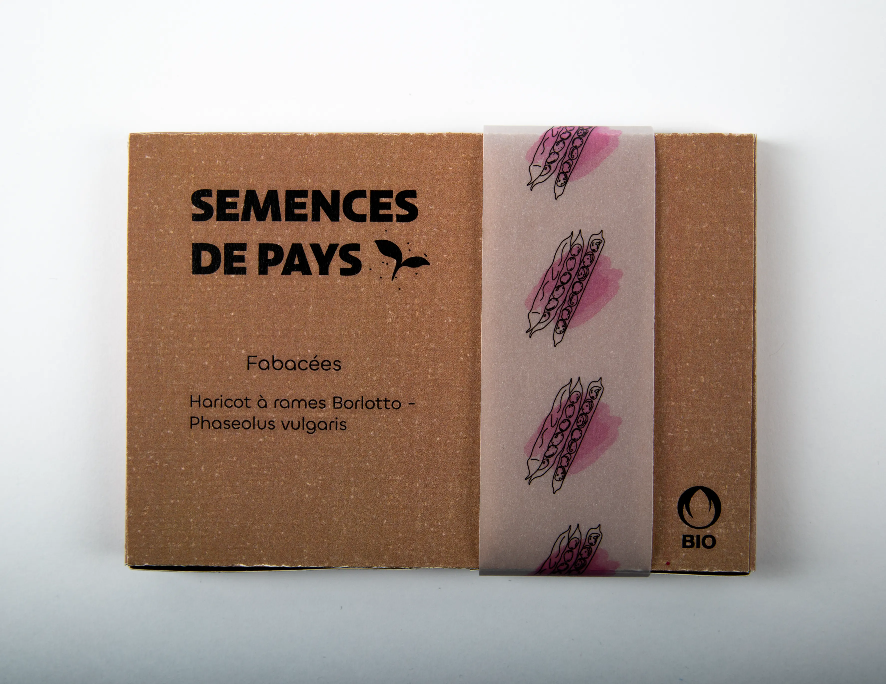
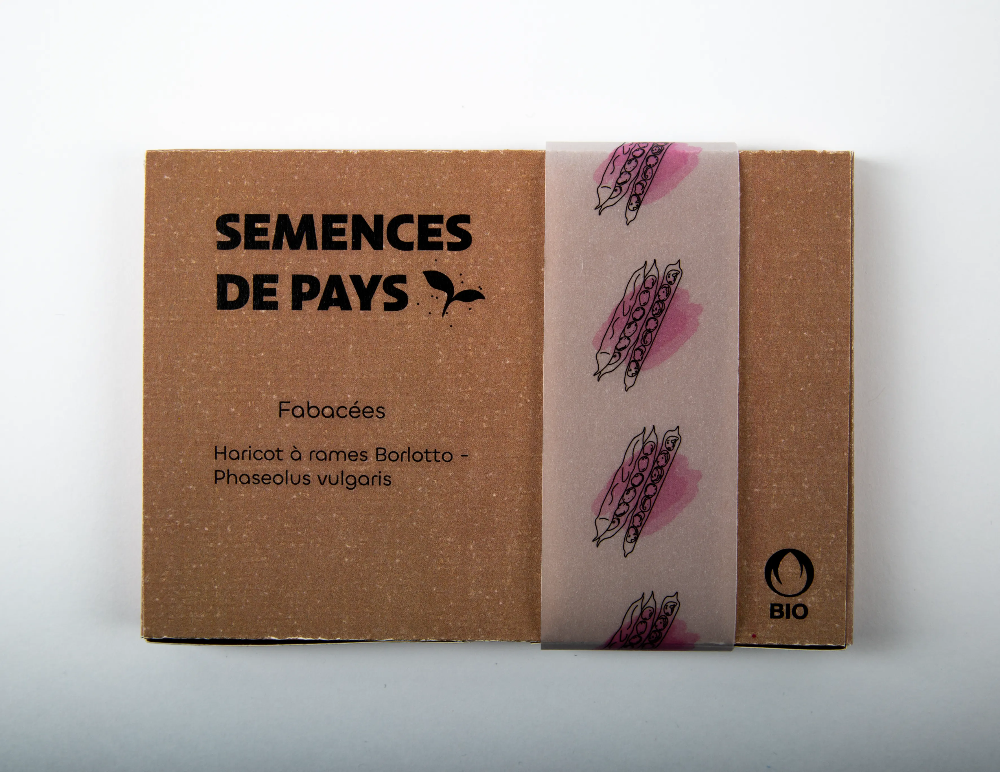

SEMENCES DE PAYS


Semences de pays développe une production de semences reproductibles, rustiques et adaptées à une agriculture biologique proche des cycles de la nature, en collaboration avec les initiatives nourricières de proximité.
NOS SEMENCES

 


Découvrez nos trésors de biodiversité sur le shop!

POINTS DE VENTE

Le Topinambour
Avenue William-Fraisse 9
1006 Lausannes
Chez Mamie
Rue des Rois 17
1204 Genève
Le Grainier
Route des Mines de Sel
1880 Bex
Ferme du Joran
Chemin des Philosophes 15
1350 Orbe
Nouvelle Terre
Rue du Grand-Verger 12
1920 Martigny